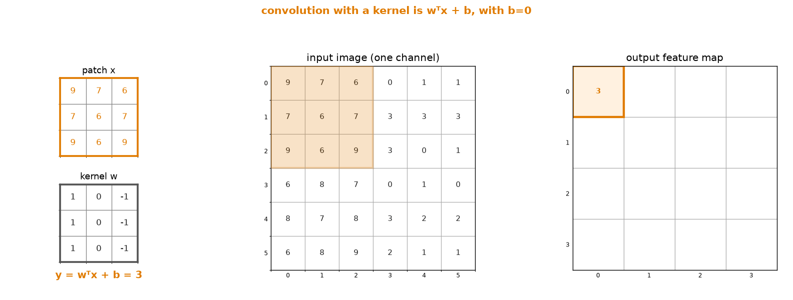
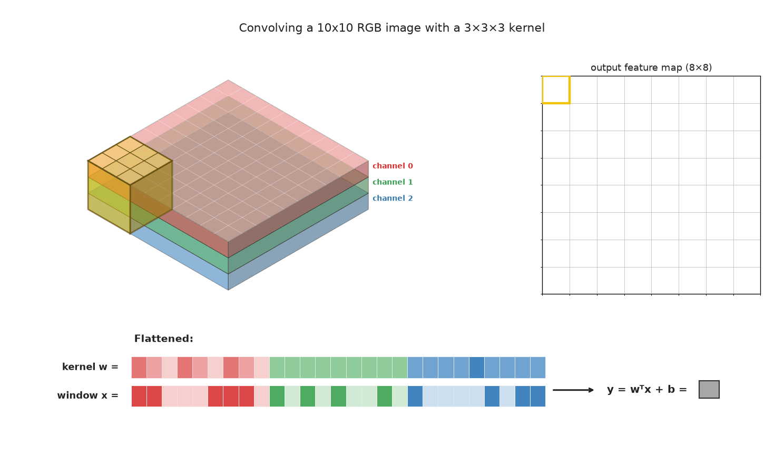
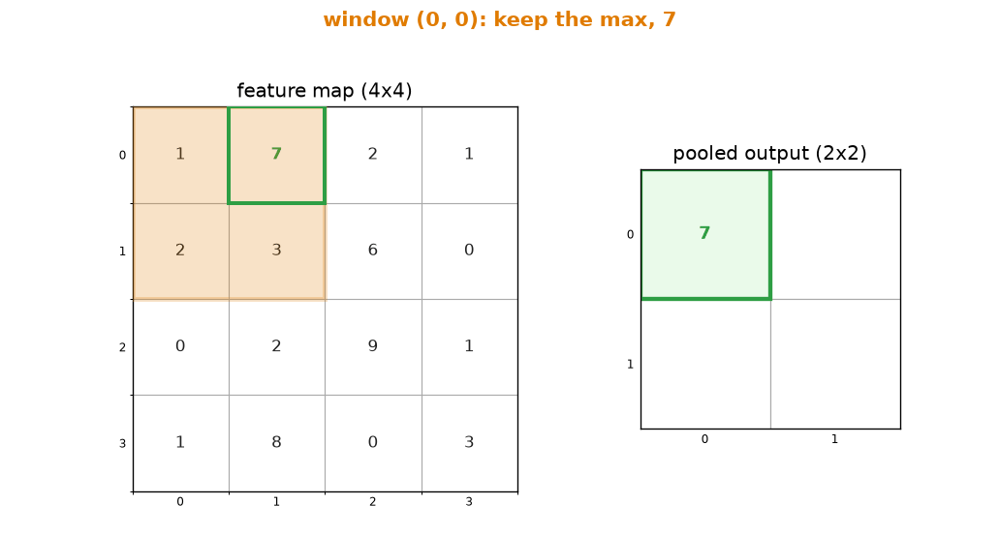
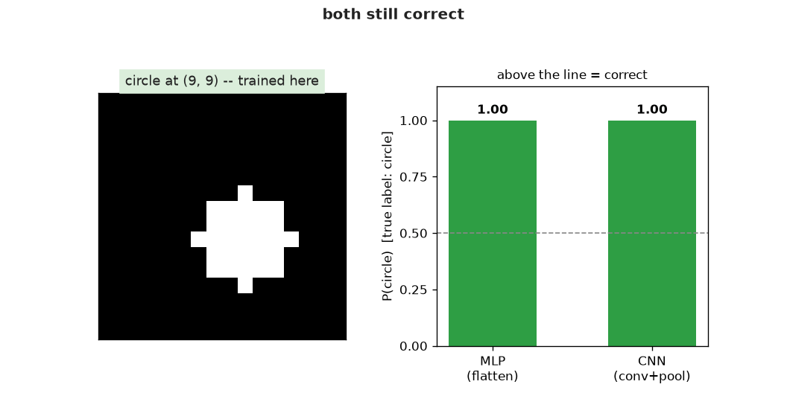

Bài 34: Mạng nơ-ron tích chập (CNN)¶
Các lớp ở Bài 31-33 coi mọi đầu vào là một vector phẳng, và điều đó tạo ra hai vấn đề riêng biệt với ảnh. Thứ nhất, mỗi điểm ảnh có trọng số độc lập riêng, không có khái niệm rằng các điểm ảnh lân cận thì gần nhau — toàn bộ cấu trúc không gian mà ảnh có bị vứt bỏ. Thứ hai, vì mỗi vị trí có trọng số riêng biệt, một lớp kết nối đầy đủ không có cách nào dùng lại một bộ lọc nó đã học: nó phải học lại một cách độc lập một cạnh trông như thế nào ở từng vị trí, hết lần này đến lần khác. Tích chập — đã được tự xây dựng ở Bài 10 — khắc phục cả hai vấn đề cùng lúc bằng cách đưa vào một thiên kiến quy nạp (inductive bias): giới hạn mỗi đầu ra vào một mảng cục bộ nhỏ, và chia sẻ trọng số của mảng đó qua mọi vị trí.
import numpy as np
import torch
import torch.nn as nn
import torch.nn.functional as F
import matplotlib.pyplot as plt
Một lớp tích chập là một phép chiếu, bị giới hạn và được chia sẻ¶
Nhớ lại ý tưởng trung tâm của Bài 30: $y = w^\top x + b$, một phép chiếu. Một lớp tích chập tính chính xác điều này, nhưng với $x$, nó chỉ nhìn vào một mảng cục bộ nhỏ (chẳng hạn $3\times3$) thay vì toàn bộ ảnh — và, quan trọng là, nó dùng lại cùng $w$ tại mọi vị trí mảng. Hai hệ quả:
- Ít tham số hơn rất nhiều. Một bộ lọc $3\times3$ trên một kênh đầu vào duy nhất có 9 trọng số, bất kể ảnh lớn đến đâu — một lớp kết nối đầy đủ trên ảnh $100\times100$ cần 10.000 trọng số cho mỗi đơn vị đầu ra.
- Tính đẳng biến tịnh tiến (translation equivariance). Vì cùng một bộ lọc trượt khắp nơi, một đặc trưng học được ở một vị trí tự động được phát hiện ở mọi vị trí khác, miễn phí. Đẳng biến (equivariant) nghĩa là đầu ra dịch chuyển theo đầu vào, thay vì đứng yên — dịch ảnh 2 điểm ảnh thì các phát hiện của bản đồ đặc trưng cũng dịch đúng 2 điểm ảnh. Đó là một tính chất riêng biệt, yếu hơn so với bất biến (invariance) (đầu ra không đổi dù đầu vào bị dịch chuyển), thứ mà phép gộp (pooling) bổ sung thêm một chút, ở phần sau của bài.
Ảnh động bên dưới trượt một kernel Prewitt biên dọc $3\times3$ (không lật cho đơn giản, vì "tích chập" thường được cài đặt dưới dạng tương quan chéo) qua một ảnh biên bậc đơn giản, dừng lại ở mỗi vị trí để cho thấy phép tính của công thức phép chiếu ở Bài 30: $y=w^\top x+b$, trong đó $x$ chỉ là mảng hiện tại được làm phẳng, và không có độ lệch ($b=0$). Cùng 9 trọng số $w$ được dùng lại ở mọi vị trí.

Thêm một điều nữa: trong bối cảnh mạng nơ-ron tích chập (convolutional neural network — CNN), một "bộ lọc $3\times3$" thực ra là $3\times3\times C_{in}$, không chỉ $3\times3$ — trong đó $C_{in}$ là số kênh đầu vào. Các kernel ở Bài 10 là các lưới 2D phẳng, vì chúng trượt trên một kênh xám duy nhất. Bộ lọc của một lớp tích chập phải vươn qua mọi kênh đầu vào cùng lúc — một bộ lọc $3\times3$ trên ảnh RGB 3 kênh có $3\times3\times3=27$ trọng số, mỗi kênh đầu vào một lát $3\times3$ đầy đủ, được cộng lại thành một giá trị đầu ra duy nhất ở mỗi vị trí. Xếp $C_{out}$ bộ lọc $3\times3\times C_{in}$ như vậy cạnh nhau (mỗi kênh đầu ra một bộ lọc) và tensor trọng số đầy đủ là 4D: (C_out, C_in, 3, 3) — đúng hình dạng mà conv2d_forward bên dưới mong đợi.
Ảnh động này minh họa khái niệm: một kernel 3x3x3 trượt qua một khối đầu vào 10x10x3 (ba tấm kênh xếp chồng, được mã hóa màu), tạo ra một giá trị đầu ra cho mỗi vị trí. Ở phía dưới, cửa sổ hiện tại và kernel được làm phẳng thành các vector khối màu — cùng thứ tự kênh, cùng giá trị — cho thấy tích vô hướng của chúng (với $b=0$) là giá trị đầu ra. Hình khối lập phương và hình vector phẳng thể hiện cùng một phép tính.

Conv2d, lượt xuôi và lượt ngược, từ đầu¶
Đây là cùng phép tính cửa sổ trượt như tích chập ở Bài 10, chỉ là kernel giờ là một tập trọng số học được thay vì một kernel cố định, thiết kế thủ công — điều đó có nghĩa là nó cũng cần một lượt ngược.
def conv2d_forward(img, kernel, bias):
N, C, H, W = img.shape
OC, IC, KH, KW = kernel.shape
OH, OW = H - KH + 1, W - KW + 1
out = np.zeros((N, OC, OH, OW))
for n in range(N):
for oc in range(OC):
for i in range(OH):
for j in range(OW):
patch = img[n, :, i:i + KH, j:j + KW]
out[n, oc, i, j] = np.sum(patch * kernel[oc]) + bias[oc]
return out
def conv2d_backward(img, kernel, grad_out):
N, C, H, W = img.shape
OC, IC, KH, KW = kernel.shape
OH, OW = grad_out.shape[2], grad_out.shape[3]
grad_kernel = np.zeros_like(kernel)
grad_img = np.zeros_like(img)
grad_bias = grad_out.sum(axis=(0, 2, 3))
for n in range(N):
for oc in range(OC):
for i in range(OH):
for j in range(OW):
patch = img[n, :, i:i + KH, j:j + KW]
grad_kernel[oc] += grad_out[n, oc, i, j] * patch
grad_img[n, :, i:i + KH, j:j + KW] += grad_out[n, oc, i, j] * kernel[oc]
return grad_img, grad_kernel, grad_bias
Đối chiếu với PyTorch¶
rng = np.random.default_rng(0)
img = rng.normal(size=(1, 3, 8, 8)) # 3 input channels, e.g. RGB
kernel = rng.normal(size=(1, 3, 3, 3)) * 0.5 # ONE output filter, spanning all 3 input channels
bias = np.array([0.1])
out = conv2d_forward(img, kernel, bias)
img_t = torch.tensor(img, requires_grad=True)
kernel_t = torch.tensor(kernel, requires_grad=True)
bias_t = torch.tensor(bias, requires_grad=True)
out_t = F.conv2d(img_t, kernel_t, bias_t)
print(f'forward max diff: {np.abs(out - out_t.detach().numpy()).max():.2e}')
grad_out = rng.normal(size=out.shape)
grad_img, grad_kernel, grad_bias = conv2d_backward(img, kernel, grad_out)
out_t.backward(torch.tensor(grad_out))
print(f'grad_img max diff: {np.abs(grad_img - img_t.grad.numpy()).max():.2e}')
print(f'grad_kernel max diff: {np.abs(grad_kernel - kernel_t.grad.numpy()).max():.2e}')
print(f'grad_bias max diff: {np.abs(grad_bias - bias_t.grad.numpy()).max():.2e}')
Những bộ lọc bạn đã biết: các bộ phát hiện biên ở Bài 12¶
Đầu ra của một lớp tích chập trước khi huấn luyện là vô nghĩa; mấu chốt là hạ gradient sẽ tìm ra các bộ lọc hữu ích. Để thấy đầu ra của một bộ lọc hữu ích trông như thế nào, hãy áp dụng một bộ lọc mà bạn đã tự thiết kế ở Bài 12: kernel biên Sobel. Hóa ra, các bộ lọc lớp đầu tiên của các CNN đã huấn luyện thường hội tụ về thứ gì đó trông tương tự như thế này — các bộ phát hiện biên có hướng và đốm — bất kể mạng được huấn luyện để làm gì.
test_img = np.zeros((1, 1, 40, 40))
test_img[0, 0, 10:30, 10:30] = 1.0
sobel_x = np.array([[-1, 0, 1], [-2, 0, 2], [-1, 0, 1]], dtype=np.float64).reshape(1, 1, 3, 3)
feature_map = conv2d_forward(test_img, sobel_x, np.zeros(1))
fig, axes = plt.subplots(1, 2, figsize=(6, 3.5))
axes[0].imshow(test_img[0, 0], cmap='gray')
axes[0].set_title('Input')
axes[1].imshow(feature_map[0, 0], cmap='gray')
axes[1].set_title('Feature map\n(Sobel filter, as a conv layer)')
for ax in axes:
ax.axis('off')
plt.tight_layout()
plt.show()
![No description has been provided for this image]()
Gộp: giảm mẫu có mục đích¶
Gộp cực đại (max pooling) trượt một cửa sổ trên bản đồ đặc trưng và chỉ giữ giá trị lớn nhất trong mỗi cửa sổ, thu nhỏ kích thước không gian (giống các kim tự tháp ở Bài 11) đồng thời bổ sung một chút bất biến tịnh tiến cục bộ — một đặc trưng được phát hiện ở các vị trí hơi khác nhau trong một cửa sổ gộp vẫn cho ra cùng một đầu ra.
Ảnh động bên dưới bước một cửa sổ $2\times2$, bước nhảy (stride) 2 qua một bản đồ đặc trưng nhỏ, làm nổi bật ô cực đại ở mỗi điểm dừng và điền vào đầu ra đã giảm mẫu tương ứng.

def maxpool2d(x, size=2):
N, C, H, W = x.shape
OH, OW = H // size, W // size
out = np.zeros((N, C, OH, OW))
for i in range(OH):
for j in range(OW):
patch = x[:, :, i * size:i * size + size, j * size:j * size + size]
out[:, :, i, j] = patch.max(axis=(2, 3))
return out
pool_test = rng.normal(size=(1, 1, 8, 8))
mine = maxpool2d(pool_test)
torch_result = F.max_pool2d(torch.tensor(pool_test), 2)
print(f'max pooling max diff vs torch: {np.abs(mine - torch_result.numpy()).max():.2e}')
Ghép chúng lại: tích chập và gộp, xen kẽ nhau¶
Một CNN thực tế không toàn là tích chập cũng không toàn là gộp — mà là hai loại xếp chồng luân phiên: tích chập, gộp, tích chập, gộp, và cứ thế. Mỗi bước gộp giảm kích thước không gian ($H$ và $W$) khoảng một nửa, và quy tắc ngón tay cái là tăng số kênh trong lớp tích chập tiếp theo khoảng gấp đôi. Đó không phải là trùng hợp: phép gộp vứt bỏ độ phân giải không gian, nên gấp đôi số kênh ngay sau đó giữ tổng lượng thông tin ($C \times H \times W$) gần như không đổi từ giai đoạn này sang giai đoạn khác, ngay cả khi biểu diễn đánh đổi "một ít chi tiết ở nhiều vị trí" lấy "nhiều chi tiết hơn ở ít vị trí hơn". CNNClassifier được xây dựng bên dưới theo mẫu này: một lớp tích chập đầu tiên với $1 \rightarrow 8$ kênh, độ phân giải đầy đủ $16\times16$; một phép gộp giảm một nửa xuống $8\times8$; rồi một lớp tích chập thứ hai lại gấp đôi số kênh, $8 \rightarrow 16$.
Tại sao tính đẳng biến tịnh tiến thực sự quan trọng: một phép thử khả năng tổng quát hóa¶
Hãy dựng một nhiệm vụ phân loại nhỏ: một ảnh $16\times16$ chứa hoặc một dấu cộng hoặc một hình tròn, ở một vị trí ngẫu nhiên. Huấn luyện trên các hình chỉ được đặt gần trung tâm; kiểm tra trên các hình chỉ được đặt gần các góc — những vị trí mà mô hình chưa bao giờ thấy trong khi huấn luyện. Một mạng thực sự đã học được "dấu cộng trông như thế nào", thay vì "những điểm ảnh nào thường bật với dấu cộng ở các vị trí huấn luyện cụ thể này", sẽ không gặp khó khăn gì với điều này.
def make_image(shape_type, cx, cy, size=16):
img = np.zeros((size, size), dtype=np.float32)
if shape_type == 'plus':
img[cy - 1:cy + 2, cx - 3:cx + 4] = 1.0
img[cy - 3:cy + 4, cx - 1:cx + 2] = 1.0
else:
yy, xx = np.mgrid[0:size, 0:size]
img[((xx - cx) ** 2 + (yy - cy) ** 2) <= 9] = 1.0
return img
def make_dataset(rng_local, n, position_range):
imgs, labels = [], []
for _ in range(n):
shape_type = rng_local.choice(['plus', 'circle'])
cx, cy = rng_local.integers(*position_range), rng_local.integers(*position_range)
imgs.append(make_image(shape_type, cx, cy))
labels.append(0.0 if shape_type == 'plus' else 1.0)
return np.array(imgs, dtype=np.float32), np.array(labels, dtype=np.float32)
data_rng = np.random.default_rng(1)
X_train, y_train = make_dataset(data_rng, 300, (5, 11)) # near center
X_test, y_test = make_dataset(data_rng, 150, (3, 5)) # near a corner -- never seen in training
fig, axes = plt.subplots(1, 4, figsize=(9, 2.5))
for ax, im, title in zip(axes, [X_train[0], X_train[1], X_test[0], X_test[1]],
['train example', 'train example', 'test example\n(unseen position)', 'test example\n(unseen position)']):
ax.imshow(im, cmap='gray')
ax.set_title(title, fontsize=8)
ax.axis('off')
plt.tight_layout()
plt.show()
![No description has been provided for this image]()
class MLPClassifier(nn.Module):
def __init__(self):
super().__init__()
self.net = nn.Sequential(nn.Flatten(), nn.Linear(16 * 16, 32), nn.ReLU(), nn.Linear(32, 1))
def forward(self, x):
return self.net(x).squeeze(-1)
class CNNClassifier(nn.Module):
def __init__(self):
super().__init__()
self.conv = nn.Sequential(
nn.Conv2d(1, 8, 5, padding=2), nn.ReLU(),
nn.MaxPool2d(2),
nn.Conv2d(8, 16, 5, padding=2), nn.ReLU(),
nn.AdaptiveMaxPool2d(1), # global max pool: collapses ALL spatial position info
)
self.fc = nn.Linear(16, 1)
def forward(self, x):
return self.fc(self.conv(x).flatten(1)).squeeze(-1)
def train_and_eval(model_cls, Xtr, ytr, Xte, yte, seed, epochs=400, lr=0.01):
torch.manual_seed(seed) # seed BEFORE constructing the model, so init is actually reproducible
model = model_cls()
opt = torch.optim.Adam(model.parameters(), lr=lr)
for _ in range(epochs):
opt.zero_grad()
loss = F.binary_cross_entropy_with_logits(model(Xtr), ytr)
loss.backward()
opt.step()
with torch.no_grad():
train_acc = ((model(Xtr) > 0).float() == ytr).float().mean().item()
test_acc = ((model(Xte) > 0).float() == yte).float().mean().item()
return train_acc, test_acc
Xtr_t = torch.tensor(X_train).unsqueeze(1)
ytr_t = torch.tensor(y_train)
Xte_t = torch.tensor(X_test).unsqueeze(1)
yte_t = torch.tensor(y_test)
mlp_train_acc, mlp_test_acc = train_and_eval(MLPClassifier, Xtr_t, ytr_t, Xte_t, yte_t, seed=0)
cnn_train_acc, cnn_test_acc = train_and_eval(CNNClassifier, Xtr_t, ytr_t, Xte_t, yte_t, seed=0)
print(f'{"model":>6} {"train acc":>10} {"test acc (unseen positions)":>30}')
print(f'{"MLP":>6} {mlp_train_acc:>10.1%} {mlp_test_acc:>30.1%}')
print(f'{"CNN":>6} {cnn_train_acc:>10.1%} {cnn_test_acc:>30.1%}')
Cả hai mô hình đều khớp hoàn hảo với dữ liệu huấn luyện. Trên các vị trí mà cả hai chưa từng thấy, MLP dựa trên làm phẳng chỉ khá hơn tung đồng xu một chút — nó đã ghi nhớ những điểm ảnh nào thường bật với mỗi lớp ở các vị trí huấn luyện, và kiến thức đó không chuyển giao được. CNN, với phép gộp cực đại toàn cục buộc quyết định cuối cùng chỉ phụ thuộc vào những bộ lọc nào đã kích hoạt ở đâu đó, chứ không phải ở đâu, tổng quát hóa sang các vị trí mới mà không hề mất chút độ chính xác nào.
Ảnh động bên dưới cho thấy sự thất bại: cùng một hình 'tròn' trượt qua vài vị trí nằm an toàn bên trong vùng huấn luyện, rồi thêm một bước nữa vào khoảng kiểm tra được giữ lại mà nó chưa bao giờ thấy. MLP vẫn đúng một cách tự tin suốt thời gian còn ở trong vùng quen thuộc, rồi lật thành sai một cách tự tin ngay khoảnh khắc nó vượt sang vùng chưa thấy. CNN không bao giờ dao động.

Bài tập¶
- Thay
nn.AdaptiveMaxPool2d(1)trongCNNClassifierbằngnn.Flatten()trực tiếp trên các đặc trưng tích chập (bỏ phép gộp toàn cục, để vị trí không gian được giữ nguyên tới tận lớp tuyến tính cuối cùng). Huấn luyện lại và đánh giá lại trên tập kiểm tra vị trí chưa thấy. Lợi thế tổng quát hóa của CNN có còn tồn tại không? - Tăng khoảng cách giữa khoảng vị trí huấn luyện và kiểm tra (ví dụ huấn luyện trên
(5, 11), kiểm tra trên(0, 3), ngay sát biên ảnh nơi các hình bị cắt xén). Độ chính xác của CNN có giữ vững, hay suy giảm — và nếu suy giảm, đó là thất bại về tính bất biến tịnh tiến hay hoàn toàn là thứ gì khác (hãy nghĩ xem điều gì xảy ra với diện mạo của một hình, không chỉ vị trí của nó, ngay tại một cạnh)? conv2d_forwardở trên không đệm gì cả (OH = H - KH + 1), nên đầu ra thu nhỏ qua mỗi lớp. Hãy sửa nó để hỗ trợ đệm số 0 (đệm đầu vàoKH//2ở mỗi bên trước khi trượt, khớp với tham sốpadding=của PyTorch) và xác nhận kích thước đầu ra khớp với kích thước đầu vào, đối chiếu vớiF.conv2d(..., padding=1).